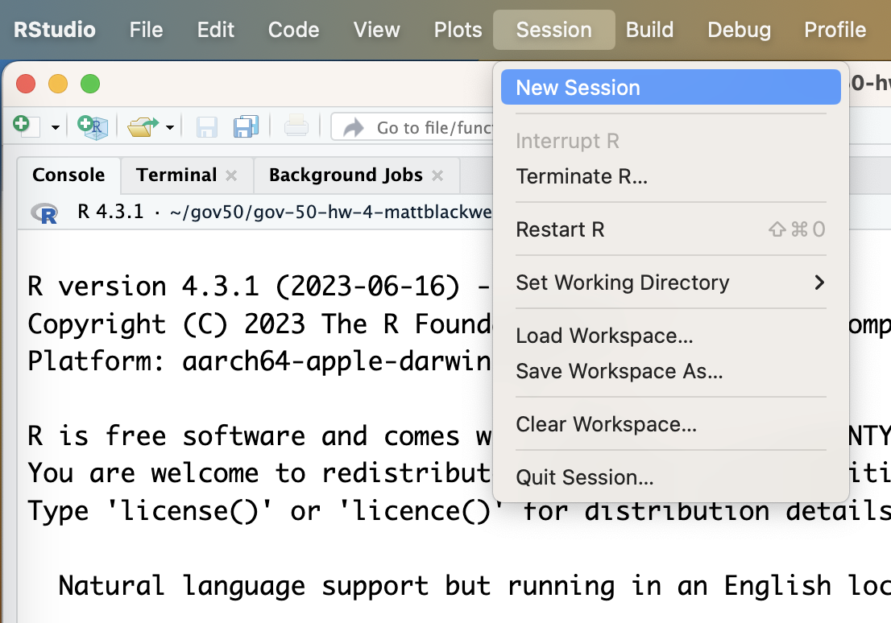

Troubleshooting Assignments
Missing Git tab in RStudio
If you are missing your Git tab in RStudio, the most likely culprit is that you simply don’t have the RStudio project for the repository open in RStudio. In the upper right-hand corner of RStudio, you can see the current project that is open. If you do not have a project open, you might see this:
To get to your project, simply click on that Project: (None) button to reveal a list of recent projects, from which you will usually see the one you are working on:
Errors pushing to GitHub
If you trying to push to GitHub and you get an error saying something like:
/usr/bin/git push origin HEAD:refs/heads/main To https://github.com/gov50-f23/gov-50-hw-2-mattblackwell.git ! [rejected] HEAD -> main (non-fast-forward) error: failed to push some refs to ‘https://github.com/gov50-f23/gov-50-hw-2-mattblackwell.git’ hint: Updates were rejected because the tip of your current branch is behind hint: its remote counterpart. Integrate the remote changes (e.g. hint: ‘git pull …’) before pushing again. hint: See the ‘Note about fast-forwards’ in ‘git push –help’ for details.
This can happen if you edit the repository manually on the GitHub website rather than in your local version. Sometimes you can fix this problem by simply hitting the “Pull” button in RStudio:
If this solves your problem, great! If you get an error message when trying to pull, then you’ll need to resolve the conflicts manually. First start a new session of RStudio by going to the Session menu and hitting “New Session”:

This will open a new RStudio window. In this new window, we are going to create a new project from the same repository. When creating this new project, be sure to add _new to the end of the project directory name:

Now you should have two RStudio sessions with two different projects: the original local one and a new one directly from GitHub:
Assuming you want to overwrite whatever is on the GitHub website with what is on you local computer, copy the contents of your Rmd file from the old RStudio project to the same Rmd file in the new RStudio project. In the new RStudio project, knit the Rmd file, commit any changes, and then push to GitHub. Thew new RStudio project should be all synced now.
Once you are confident that the new project has all of the changes that you want, simply delete the old RStudio project from your computer.
Files larger than 100 MB
If you get a push error complaining about files greater than 100 MB, you will need to follow similar steps to the pull error steps in the last section. Once you have copied over the contents of your Rmd files, you can then add your data files. For files over 100 MB, you will add them to the the .gitignore file of your new repository. To do this, add the file to your new repository and it will show up in the Git tab. Right-click on the new file in the Git tab and hit the Ignore button:
A dialog box will open and you can hit “Save” which will add or amend a .gitignore file in your repository. You should then stage and commit that .gitignore file and push.
A good practice would be to now write an Rmd file or R script that will load the ignored big data file, subset it to certain rows and columns and then save the file as a csv file using write_csv(). Once you get that csv file to under 100 MB, you can commit that file and use it as the main data file in your main Rmd file.
Final project website is not updating
If you have committed and pushed a change to your final project repository and confirmed that the website has deployed (by looking at the green check), but there are no changes to the actual project website, there could be a couple of problems. First, check to make sure you have knitted the Rmd file to HTML and then committed and pushed any changes to the HTML file to GitHub. Once way to ensure this is to check the “Knit on Save” checkbox so that RStudio automatically knits when you save.
Second, you might check the website in a second browser or incognito window. Sometimes browsers cache versions of the website and don’t update them immediately. Finally, sometimes the deploy process just doesn’t work or times out for unknown reasons (“internet weather”). In that case, try to add another change, knit, commit, and push to get the process to restart.
Missing images and figures in final project website
If you are missing the figures on your final project website, but you saw them when you knitted on your computer, you probably need to stage, commit, and push the output of your knitting to GitHub. In particular, you should see a bunch of files in your Git tab:
You need to stage all of those, commit the changes, and push. Make sure that you do not stage any large data files by accident.